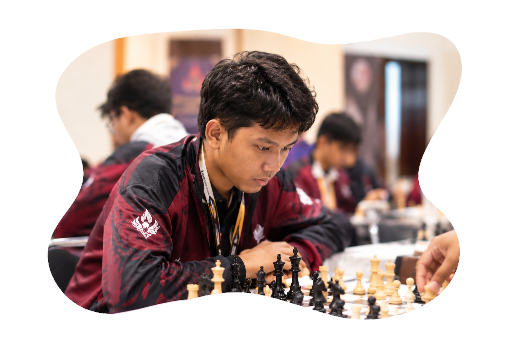

UKM-O CATUR & BRIDGE
Strategi, Sportivitas,
dan Prestasi
UKM-O Catur & Bridge adalah wadah bagi mahasiswa
untuk mengembangkan potensi, menjalin persahabatan,
dan meraih prestasi di bidang catur & bridge.
TENTANG KAMI
UKM-O Catur & Bridge adalah unit kegiatan mahasiswa yang berfokus pada pengembangan minat dan bakat di bidang catur & bridge. Kami menjadi wadah bagi mahasiswa untuk belajar, berlatih, dan berkompetisi serta menjalin silaturahmi antar anggota
Lihat selengkapnya →
👁 VISI
Menjadi UKM yang unggul dalam prestasi, berkarakter dan berdaya saing di bidang Catur & Bridge
𖣠 MISI
- Mengembangkan kemampuan anggota
- Meningkatkan prestasi di tingkat regional maupun nasional
- Menjalin hubungan baik antar anggota dan komunitas